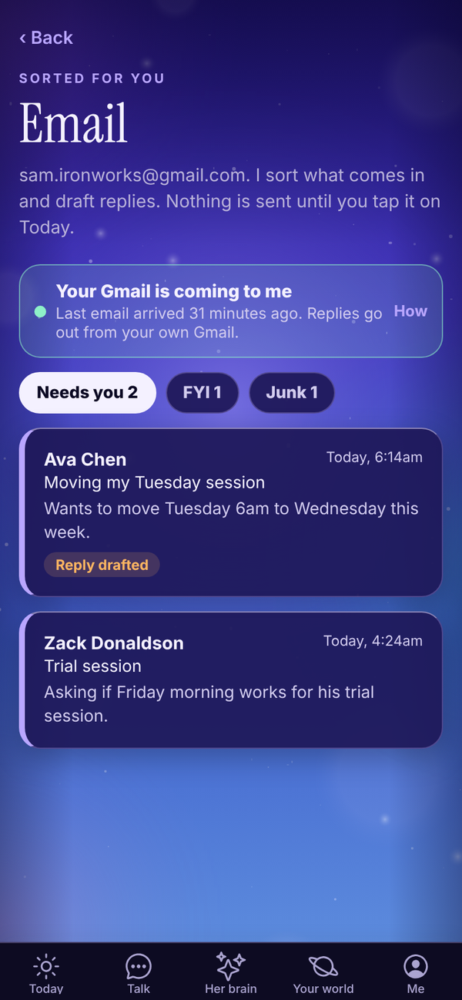
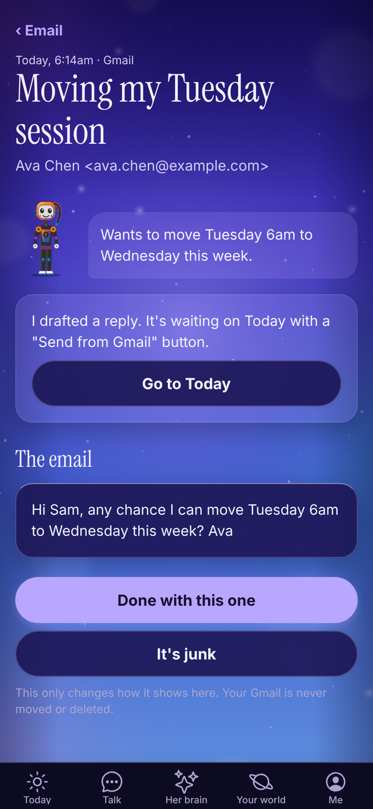
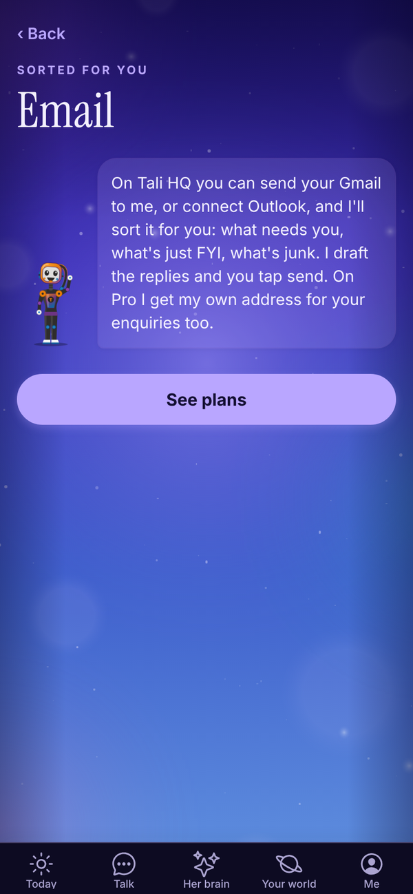

Tali HQ guide
Gmail, Outlook and your calendar
Send your Gmail to Tali or connect Outlook, and connect your calendar, so Tali sorts your email, drafts replies and books meetings on your yes.
Tali sorts new mail into Needs you, FYI and Junk, drafts replies for the ones that need you, puts your day in your morning brief and drafts bookings. Nothing is sent or booked until you tap it. Tali HQ
- Gmail reaches Tali by forwarding. You switch on Gmail's own forwarding to your Tali address, and replies still go out from your own Gmail.
- Outlook (including Hotmail and Outlook.com) connects with a Microsoft sign in.
- Google Calendar and Outlook calendar connect with a sign in.
Send your Gmail to Tali#
Do this on a computer. Gmail only shows its forwarding settings in a web browser.
- Open Your world, Work, Email. The card Send your Gmail to me shows your own Tali address. Tap Copy.
- Tap Open Gmail's forwarding settings, choose Add a forwarding address and paste the address in.
- Gmail emails a confirmation code to Tali. The code shows on the same card in Tali HQ within a minute or so. Type it into Gmail, or tap Confirm with Gmail.
- Back in Gmail's forwarding settings, switch forwarding on and save.
- When the first email arrives, the card says Your Gmail is coming to me.
Your Gmail keeps every email as normal. Tali only gets a copy.
Connect Google (sending and calendar)#
Connect Google so replies Tali drafts go out from your own Gmail when you tap Send, and so she can see your calendar.
- Open Me, Settings and scroll down to Connections.
- On the Google card, tap Connect Google. Or tap Just the calendar if you only want your calendar.
- Google's sign in opens. Pick your account.
- Tick every box Google asks about, then continue.
- You come back to Settings and see "Connected to" with your Gmail address.
Google asks for permission to send email, to see and change your calendar, and to see your email address. It does not ask to read your email.
If you connected just the calendar, tap Add Gmail sending later.
Connect Outlook#
- Open Me, Settings, Connections.
- On the Microsoft 365 (Outlook) card, tap Connect Outlook mail and calendar, or Just the calendar.
- Sign in with Microsoft and accept every permission it asks about.
- You come back to Settings and see "Connected to" with your Outlook address.
Work accounts: your IT admin may need to approve Tali HQ the first time.
Your sorted email#
Once your Gmail is forwarding or Outlook is connected, open Your world, Work, Email. Under your email address you'll see three tabs with counts: Needs you, FYI and Junk.


- Forwarded Gmail arrives as soon as Gmail sends it on. Tali checks Outlook every 10 minutes.
- She only gets mail that arrives after you set it up. Older mail isn't touched.
- Emails that need you have a purple edge, and Reply drafted when a reply is waiting on Today.
- Tap an email to read it. Tali's summary sits at the top, then The email.
- Done with this one marks it handled. It's junk moves it to Junk, and Not junk moves it back.
These buttons only change how the email shows in Tali HQ. Your Gmail or Outlook is never moved or deleted.
Each new email Tali sorts uses 1 credit. If you're out of credits, new emails still come in, filed under FYI without a summary.
Replies#
For each email that needs you, Tali drafts a reply and puts it on Today under Needs your yes. Open it and tap Send from Gmail (or Send from Outlook) to send it from your own mailbox, in the same thread. See Approvals.
You can also ask in Talk: "email Ava that Wednesday 6am works". Tali drafts it on Today with a Send button.
Your calendar#
With a calendar connected:
- your morning brief includes today's events and free gaps
- Calendar shows under More from Tali on Today, with today's events and when you're free
- Tali knows your week in Talk, so you can ask "when am I free tomorrow?"
- ask "book Zack in for a trial Friday at 7" and Tali drafts a booking on Today. Tap Book it and it goes into your calendar, with an invite to the attendee if there's an email
- the meeting nudge on Today tells you what Tali knows about a client before you meet them
Disconnect#
- Open Me, Settings, Connections.
- On the Google or Microsoft card, tap Disconnect.
- Tap Yes, disconnect Google (or Microsoft) to confirm, or Keep it connected.
Disconnecting Microsoft makes Tali forget everything that came from your Outlook. Disconnecting Google stops replies going out from your Gmail and removes your calendar from Tali. Emails you forwarded stay in Tali HQ until they are 90 days old. To stop them arriving, switch forwarding off in Gmail. Your actual emails and calendar are untouched.
If Google or Microsoft signs Tali out (for example after a password change), the card says so. Tap Reconnect Google or Reconnect Microsoft.
On the Free plan#
On Free, Your world, Email explains what you get on Tali HQ, with See plans. Gmail forwarding, Outlook and calendars are part of the paid plans (Tali HQ, Pro and Max) and the trial.

Questions#
Can Tali read my Gmail?
Not directly. She only sees the emails Gmail forwards to her after you switch forwarding on.
Can Tali delete or move my emails?
No. She sorts new mail and drafts replies. She never deletes, moves or archives anything in your mailbox.
Will Tali read my old emails?
No. Only mail that arrives after you set it up.
How long does Tali keep my Gmail emails?
Emails from your Gmail are kept in Tali HQ for 90 days, then deleted. Replies you sent stay as your own drafts.
Can I use both Gmail and Outlook?
You can. When both are set up, Tali uses your Gmail for mail and Google for your calendar.
Why is an email in FYI that should be in Needs you?
Tali sorts by what the email asks for. If you were out of credits when it arrived, it goes to FYI without sorting. You can still open it from FYI.
Google said something went wrong when connecting.
Give it another go and tick every box Google asks about. If it says the link timed out, start again from Settings.